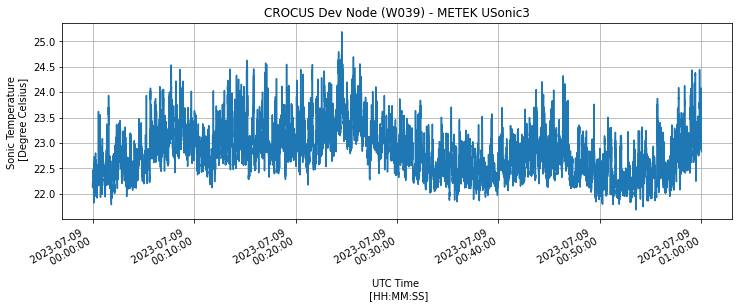
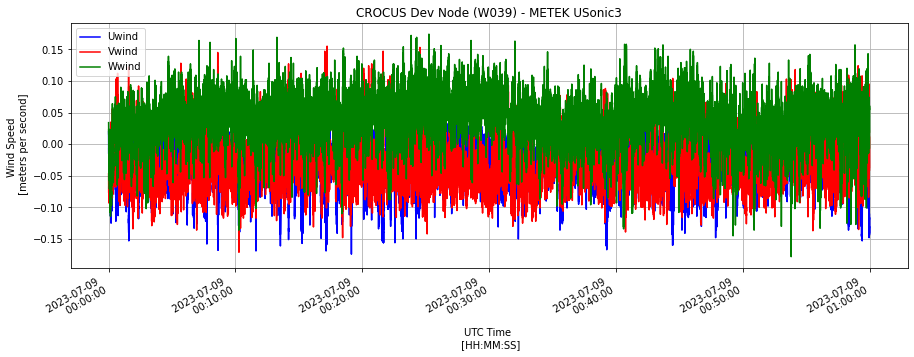

import sage_data_client
import matplotlib.pyplot as plt
import pandas as pd
from matplotlib.dates import DateFormatter
df = sage_data_client.query(start="2023-07-09T00:00:00Z",
end="2023-07-09T01:00:00Z",
filter={
"plugin": "10.31.81.1:5000/local/waggle-sonic3d",
"vsn": "W039",
"sensor": "metek-sonic3D"
}
)
---------------------------------------------------------------------------
ValueError Traceback (most recent call last)
File ~/miniconda3/envs/instrument-cookbooks-dev/lib/python3.10/http/client.py:566, in HTTPResponse._get_chunk_left(self)
565 try:
--> 566 chunk_left = self._read_next_chunk_size()
567 except ValueError:
File ~/miniconda3/envs/instrument-cookbooks-dev/lib/python3.10/http/client.py:533, in HTTPResponse._read_next_chunk_size(self)
532 try:
--> 533 return int(line, 16)
534 except ValueError:
535 # close the connection as protocol synchronisation is
536 # probably lost
ValueError: invalid literal for int() with base 16: b''
During handling of the above exception, another exception occurred:
IncompleteRead Traceback (most recent call last)
File ~/miniconda3/envs/instrument-cookbooks-dev/lib/python3.10/http/client.py:583, in HTTPResponse._read_chunked(self, amt)
582 while True:
--> 583 chunk_left = self._get_chunk_left()
584 if chunk_left is None:
File ~/miniconda3/envs/instrument-cookbooks-dev/lib/python3.10/http/client.py:568, in HTTPResponse._get_chunk_left(self)
567 except ValueError:
--> 568 raise IncompleteRead(b'')
569 if chunk_left == 0:
570 # last chunk: 1*("0") [ chunk-extension ] CRLF
IncompleteRead: IncompleteRead(0 bytes read)
During handling of the above exception, another exception occurred:
IncompleteRead Traceback (most recent call last)
Cell In[2], line 1
----> 1 df = sage_data_client.query(start="2023-07-09T00:00:00Z",
2 end="2023-07-09T01:00:00Z",
3 filter={
4 "plugin": "10.31.81.1:5000/local/waggle-sonic3d",
5 "vsn": "W039",
6 "sensor": "metek-sonic3D"
7 }
8 )
File ~/miniconda3/envs/instrument-cookbooks-dev/lib/python3.10/site-packages/sage_data_client/query.py:111, in query(start, end, head, tail, experimental_func, bucket, filter, endpoint)
109 if "gzip" in content_encoding:
110 f = GzipFile(fileobj=f, mode="rb")
--> 111 return load(f)
File ~/miniconda3/envs/instrument-cookbooks-dev/lib/python3.10/site-packages/sage_data_client/query.py:168, in load(path_or_buf)
165 with open(path_or_buf, "rb") as f:
166 return _load(f)
--> 168 return _load(path_or_buf)
File ~/miniconda3/envs/instrument-cookbooks-dev/lib/python3.10/site-packages/sage_data_client/query.py:183, in _load(fileobj)
182 def _load(fileobj) -> pd.DataFrame:
--> 183 df = pd.DataFrame(map(_load_row, fileobj))
185 # if dataframe is empty, return empty with known columns
186 if len(df) == 0:
File ~/miniconda3/envs/instrument-cookbooks-dev/lib/python3.10/site-packages/pandas/core/frame.py:843, in DataFrame.__init__(self, data, index, columns, dtype, copy)
841 data = np.asarray(data)
842 else:
--> 843 data = list(data)
844 if len(data) > 0:
845 if is_dataclass(data[0]):
File ~/miniconda3/envs/instrument-cookbooks-dev/lib/python3.10/gzip.py:399, in GzipFile.readline(self, size)
397 def readline(self, size=-1):
398 self._check_not_closed()
--> 399 return self._buffer.readline(size)
File ~/miniconda3/envs/instrument-cookbooks-dev/lib/python3.10/_compression.py:68, in DecompressReader.readinto(self, b)
66 def readinto(self, b):
67 with memoryview(b) as view, view.cast("B") as byte_view:
---> 68 data = self.read(len(byte_view))
69 byte_view[:len(data)] = data
70 return len(data)
File ~/miniconda3/envs/instrument-cookbooks-dev/lib/python3.10/gzip.py:494, in _GzipReader.read(self, size)
491 self._new_member = False
493 # Read a chunk of data from the file
--> 494 buf = self._fp.read(io.DEFAULT_BUFFER_SIZE)
496 uncompress = self._decompressor.decompress(buf, size)
497 if self._decompressor.unconsumed_tail != b"":
File ~/miniconda3/envs/instrument-cookbooks-dev/lib/python3.10/gzip.py:97, in _PaddedFile.read(self, size)
94 read = self._read
95 self._read = None
96 return self._buffer[read:] + \
---> 97 self.file.read(size-self._length+read)
File ~/miniconda3/envs/instrument-cookbooks-dev/lib/python3.10/http/client.py:460, in HTTPResponse.read(self, amt)
457 return b""
459 if self.chunked:
--> 460 return self._read_chunked(amt)
462 if amt is not None:
463 if self.length is not None and amt > self.length:
464 # clip the read to the "end of response"
File ~/miniconda3/envs/instrument-cookbooks-dev/lib/python3.10/http/client.py:598, in HTTPResponse._read_chunked(self, amt)
596 return b''.join(value)
597 except IncompleteRead:
--> 598 raise IncompleteRead(b''.join(value))
IncompleteRead: IncompleteRead(93 bytes read)
df
| timestamp | name | value | meta.description | meta.host | meta.job | meta.missing | meta.node | meta.plugin | meta.sensor | meta.task | meta.units | meta.vsn | meta.zone | |
|---|---|---|---|---|---|---|---|---|---|---|---|---|---|---|
| 0 | 2023-07-09 00:00:00.025172660+00:00 | sonic3d.temp | 22.149 | Sonic Temperature | 000048b02d15bc8c.ws-nxcore | Pluginctl | -9999.9 | 000048b02d15bc8c | 10.31.81.1:5000/local/waggle-sonic3d | metek-sonic3D | sonictest | degrees Celsius | W039 | core |
| 1 | 2023-07-09 00:00:00.058506456+00:00 | sonic3d.temp | 22.157 | Sonic Temperature | 000048b02d15bc8c.ws-nxcore | Pluginctl | -9999.9 | 000048b02d15bc8c | 10.31.81.1:5000/local/waggle-sonic3d | metek-sonic3D | sonictest | degrees Celsius | W039 | core |
| 2 | 2023-07-09 00:00:00.091937791+00:00 | sonic3d.temp | 22.151 | Sonic Temperature | 000048b02d15bc8c.ws-nxcore | Pluginctl | -9999.9 | 000048b02d15bc8c | 10.31.81.1:5000/local/waggle-sonic3d | metek-sonic3D | sonictest | degrees Celsius | W039 | core |
| 3 | 2023-07-09 00:00:00.126452480+00:00 | sonic3d.temp | 22.151 | Sonic Temperature | 000048b02d15bc8c.ws-nxcore | Pluginctl | -9999.9 | 000048b02d15bc8c | 10.31.81.1:5000/local/waggle-sonic3d | metek-sonic3D | sonictest | degrees Celsius | W039 | core |
| 4 | 2023-07-09 00:00:00.160199343+00:00 | sonic3d.temp | 22.150 | Sonic Temperature | 000048b02d15bc8c.ws-nxcore | Pluginctl | -9999.9 | 000048b02d15bc8c | 10.31.81.1:5000/local/waggle-sonic3d | metek-sonic3D | sonictest | degrees Celsius | W039 | core |
| ... | ... | ... | ... | ... | ... | ... | ... | ... | ... | ... | ... | ... | ... | ... |
| 431973 | 2023-07-09 00:59:59.851615551+00:00 | sonic3d.wwind | 0.002 | Vertical wind | 000048b02d15bc8c.ws-nxcore | Pluginctl | -9999.9 | 000048b02d15bc8c | 10.31.81.1:5000/local/waggle-sonic3d | metek-sonic3D | sonictest | m/s | W039 | core |
| 431974 | 2023-07-09 00:59:59.884990547+00:00 | sonic3d.wwind | 0.002 | Vertical wind | 000048b02d15bc8c.ws-nxcore | Pluginctl | -9999.9 | 000048b02d15bc8c | 10.31.81.1:5000/local/waggle-sonic3d | metek-sonic3D | sonictest | m/s | W039 | core |
| 431975 | 2023-07-09 00:59:59.918300549+00:00 | sonic3d.wwind | 0.009 | Vertical wind | 000048b02d15bc8c.ws-nxcore | Pluginctl | -9999.9 | 000048b02d15bc8c | 10.31.81.1:5000/local/waggle-sonic3d | metek-sonic3D | sonictest | m/s | W039 | core |
| 431976 | 2023-07-09 00:59:59.951650872+00:00 | sonic3d.wwind | 0.001 | Vertical wind | 000048b02d15bc8c.ws-nxcore | Pluginctl | -9999.9 | 000048b02d15bc8c | 10.31.81.1:5000/local/waggle-sonic3d | metek-sonic3D | sonictest | m/s | W039 | core |
| 431977 | 2023-07-09 00:59:59.985170224+00:00 | sonic3d.wwind | -0.006 | Vertical wind | 000048b02d15bc8c.ws-nxcore | Pluginctl | -9999.9 | 000048b02d15bc8c | 10.31.81.1:5000/local/waggle-sonic3d | metek-sonic3D | sonictest | m/s | W039 | core |
431978 rows × 14 columns
df.index
RangeIndex(start=0, stop=431978, step=1)
df.columns
Index(['timestamp', 'name', 'value', 'meta.description', 'meta.host',
'meta.job', 'meta.missing', 'meta.node', 'meta.plugin', 'meta.sensor',
'meta.task', 'meta.units', 'meta.vsn', 'meta.zone'],
dtype='object')
print(set(df['name']))
{'sonic3d.temp', 'sonic3d.wwind', 'sonic3d.vwind', 'sonic3d.uwind'}
df.loc[df['name'] == 'sonic3d.temp']
| timestamp | name | value | meta.description | meta.host | meta.job | meta.missing | meta.node | meta.plugin | meta.sensor | meta.task | meta.units | meta.vsn | meta.zone | |
|---|---|---|---|---|---|---|---|---|---|---|---|---|---|---|
| 0 | 2023-07-09 00:00:00.025172660+00:00 | sonic3d.temp | 22.149 | Sonic Temperature | 000048b02d15bc8c.ws-nxcore | Pluginctl | -9999.9 | 000048b02d15bc8c | 10.31.81.1:5000/local/waggle-sonic3d | metek-sonic3D | sonictest | degrees Celsius | W039 | core |
| 1 | 2023-07-09 00:00:00.058506456+00:00 | sonic3d.temp | 22.157 | Sonic Temperature | 000048b02d15bc8c.ws-nxcore | Pluginctl | -9999.9 | 000048b02d15bc8c | 10.31.81.1:5000/local/waggle-sonic3d | metek-sonic3D | sonictest | degrees Celsius | W039 | core |
| 2 | 2023-07-09 00:00:00.091937791+00:00 | sonic3d.temp | 22.151 | Sonic Temperature | 000048b02d15bc8c.ws-nxcore | Pluginctl | -9999.9 | 000048b02d15bc8c | 10.31.81.1:5000/local/waggle-sonic3d | metek-sonic3D | sonictest | degrees Celsius | W039 | core |
| 3 | 2023-07-09 00:00:00.126452480+00:00 | sonic3d.temp | 22.151 | Sonic Temperature | 000048b02d15bc8c.ws-nxcore | Pluginctl | -9999.9 | 000048b02d15bc8c | 10.31.81.1:5000/local/waggle-sonic3d | metek-sonic3D | sonictest | degrees Celsius | W039 | core |
| 4 | 2023-07-09 00:00:00.160199343+00:00 | sonic3d.temp | 22.150 | Sonic Temperature | 000048b02d15bc8c.ws-nxcore | Pluginctl | -9999.9 | 000048b02d15bc8c | 10.31.81.1:5000/local/waggle-sonic3d | metek-sonic3D | sonictest | degrees Celsius | W039 | core |
| ... | ... | ... | ... | ... | ... | ... | ... | ... | ... | ... | ... | ... | ... | ... |
| 107989 | 2023-07-09 00:59:59.851615551+00:00 | sonic3d.temp | 22.887 | Sonic Temperature | 000048b02d15bc8c.ws-nxcore | Pluginctl | -9999.9 | 000048b02d15bc8c | 10.31.81.1:5000/local/waggle-sonic3d | metek-sonic3D | sonictest | degrees Celsius | W039 | core |
| 107990 | 2023-07-09 00:59:59.884990547+00:00 | sonic3d.temp | 22.872 | Sonic Temperature | 000048b02d15bc8c.ws-nxcore | Pluginctl | -9999.9 | 000048b02d15bc8c | 10.31.81.1:5000/local/waggle-sonic3d | metek-sonic3D | sonictest | degrees Celsius | W039 | core |
| 107991 | 2023-07-09 00:59:59.918300549+00:00 | sonic3d.temp | 22.871 | Sonic Temperature | 000048b02d15bc8c.ws-nxcore | Pluginctl | -9999.9 | 000048b02d15bc8c | 10.31.81.1:5000/local/waggle-sonic3d | metek-sonic3D | sonictest | degrees Celsius | W039 | core |
| 107992 | 2023-07-09 00:59:59.951650872+00:00 | sonic3d.temp | 22.847 | Sonic Temperature | 000048b02d15bc8c.ws-nxcore | Pluginctl | -9999.9 | 000048b02d15bc8c | 10.31.81.1:5000/local/waggle-sonic3d | metek-sonic3D | sonictest | degrees Celsius | W039 | core |
| 107993 | 2023-07-09 00:59:59.985170224+00:00 | sonic3d.temp | 22.830 | Sonic Temperature | 000048b02d15bc8c.ws-nxcore | Pluginctl | -9999.9 | 000048b02d15bc8c | 10.31.81.1:5000/local/waggle-sonic3d | metek-sonic3D | sonictest | degrees Celsius | W039 | core |
107994 rows × 14 columns
fig, axs = plt.subplots(figsize=(12, 4))
# Define Format of how the date is displayed
date_form = DateFormatter("%Y-%m-%d \n %H:%M:%S")
# Note: Use the Pandas DataFrame 'loc' functionality to search the object for the ambient temp
df.loc[df['name'] == 'sonic3d.temp'].set_index('timestamp').value.plot(
xlabel='UTC Time \n [HH:MM:SS]',
ylabel='Sonic Temperature \n [Degree Celsius]',
title='CROCUS Dev Node (W039) - METEK USonic3',
ax=axs
)
axs.xaxis.set_major_formatter(date_form)
axs.grid(True)

fig, axs = plt.subplots(figsize=(15, 5))
# Define Format of how the date is displayed
date_form = DateFormatter("%Y-%m-%d \n %H:%M:%S")
# Note: Use the Pandas DataFrame 'loc' functionality to search the object for the ambient temp
df.loc[df['name'] == 'sonic3d.uwind'].set_index('timestamp').value.plot(
xlabel='UTC Time \n [HH:MM:SS]',
ylabel='Wind Speed \n [meters per second]',
title='CROCUS Dev Node (W039) - METEK USonic3',
ax=axs,
color='b'
)
df.loc[df['name'] == 'sonic3d.vwind'].set_index('timestamp').value.plot(
xlabel='UTC Time \n [HH:MM:SS]',
title='CROCUS Dev Node (W039) - METEK USonic3',
ax=axs,
color='r'
)
df.loc[df['name'] == 'sonic3d.wwind'].set_index('timestamp').value.plot(
xlabel='UTC Time \n [HH:MM:SS]',
title='CROCUS Dev Node (W039) - METEK USonic3',
ax=axs,
color='g'
)
# Set the left hand y-axis label and color to match variable displayed
axs.set_ylabel('Wind Speed \n [meters per second]',
color='k',
)
# Change left hand y-axis tick colors to match variable displayed
axs.tick_params(axis='y', labelcolor='k')
# Note: Use the Pandas DataFrame 'loc' functionality to search the object for the ambient temp
axs.xaxis.set_major_formatter(date_form)
axs.grid(True)
plt.legend(['Uwind', 'Vwind', 'Wwind'])
<matplotlib.legend.Legend at 0x2ad032e66cc0>
